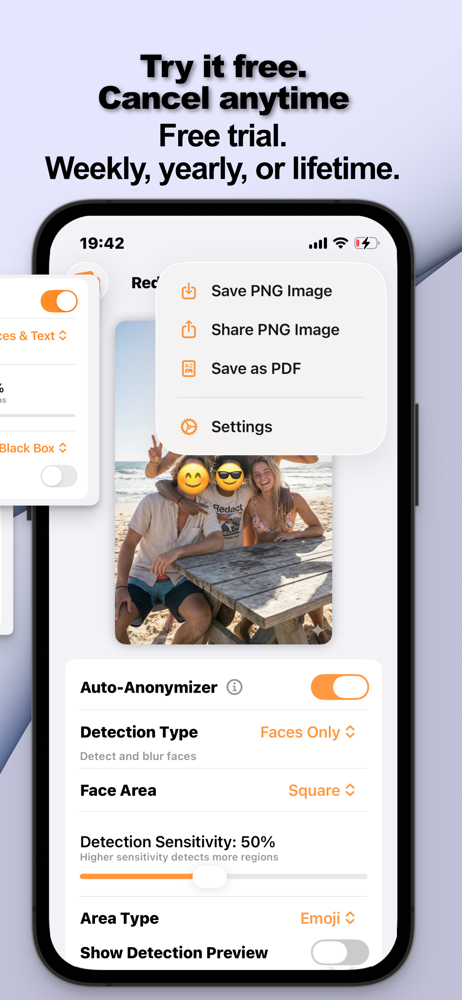

The requests come bundled: “redact the account number and send it as a PDF.” Insurance claims, expense reports, visa applications, HR paperwork: the redaction and the format conversion are one errand, so the tool should treat them as one flow.
Why PDF for Redacted Material
Three reasons offices ask for it: PDFs archive predictably (no photo-app recompression mangling the evidence), they read as documents rather than snapshots, and they slot into the systems on the receiving end. For you there's a fourth: exporting a redacted image into a fresh PDF guarantees the mask is part of the page itself, not an annotation someone's PDF editor can lift off.
Redact → PDF in One Flow (Step by Step)
- Redact the photo firstOpen the image in Redact Photo, auto-detect faces or text, and apply your masks: black box for the sensitive fields, blur where softer is fine.
- Scrub the metadataIn the EXIF panel, strip GPS, camera info, and timestamps: a document photo's metadata can say where and when it was taken.
- Choose “Save as PDF”From the export menu, pick Save as PDF. The redacted image becomes a clean PDF page, masks flattened in.
- Send it where it's goingShare straight into email or the upload portal, or save to Files for the records folder.

Size and Fit
Uploads have limits; the export flow includes resizing by dimension or file size (with a live preview), so a 1.8 MB photo can leave as a 0.2 MB attachment that still reads perfectly. The document-side details, what to mask on IDs, why black box: live in redacting documents on iPhone.
Try it on your own photos
Redact Photo is free to download with a fully unlocked 3-day free trial, mask your first photo in the next two minutes, without it leaving your phone.
Get Redact Photo on the App Store